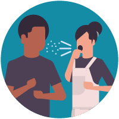

¿Qué Debemos Hacer en Casa?
- Mantenerse alejado de otras personas y mascotas que haya en su casa.
- Usar una mascarilla si va a estar en contacto con otras personas.
- Toser y estornudar en un pañuelo desechable. Tirar el pañuelo y luego lavarse las manos de inmediato.
- Si es posible, quedarse en una habitación y usar un baño separado de las otras personas.
- Usar sus propios platos, vasos, tazas y utensilios para comer y no compartirlos con las personas con las que convive.
- Use su propia ropa de cama y toallas y no las comparta con las personas con las que convive.
¿Qué más Debería Saber?
Si está cuidando a alguien con coronavirus o que tiene síntomas, siga tomando estas precauciones hasta que su médico o el departamento de salud de su localidad le digan que es seguro dejar de hacerlo.
Las personas que están enfermos y necesitan quedarse en casa pueden aburrirse mucho y sentirse solos, así que es muy probable que utilicen el teléfono, jugar a video juegos, entretenerse con puzzle o juegos de mesa, etc. Se recomienda limpiar los artículos usados por la persona enferma (cualquier objeto con la que tuvo contacto) antes de que otros miembros de la familia los usen.
